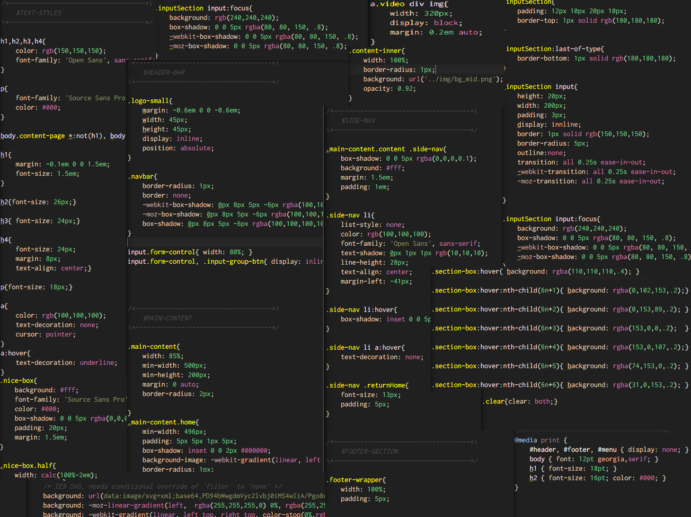

LESS CSS
Writing awsome stylesheets
Created by Alicia Sykes /
@lissy_sykes
Less is a CSS pre-processor, meaning that it extends the CSS language, adding features that allow variables, mixins, functions and many other techniques that allow you to make CSS that is more maintainable, themable and extendable.
Less runs inside Node, in the browser and inside Rhino. There are also many 3rd party tools that allow you to compile your files and watch for changes.
The problem with CSS
this...

Even if you are following good standards, keeping
your CSS tidy can be a real challenge.
Especially when it is a medium or large project or
when there are multiple developers working on it.
It's like it just naturally wants to be spaghetti
Why does this matter?
- Inconsistencies will occour.
- Maintenance is not easy.
- Time consuming to develop, debug and maintain
- Working with bad code is not very fun
The Solution...
CSS Preprocessors!
What is a CSS preprocessor?
A CSS preprocessor is basically just a scripting languge that extends CSS and gives it a more ogranised structure and a bit of extra functionality.
The three most popular CSS pre-processors
- LESS
- SASS
- Stylus
Comparison of LESS, SASS and Stylus
How to set up LESS
There's a number of different ways you can use LESS, different setups are used for different purposes
- In Node.js projects
- Using a file watcher to compile on file change
- Compiling on page load with the rel="stylesheet" and type="text/less"
- Most good IDE's have a built in LESS compiler, or a plugin availible
- With Rhino
- Comman Line Compilation
- Browser Plugins
- Using online compilers
Using LESS in Node.js Express
In Node you can just install less-middleware
npm install less-middlewarevar lessMiddleware = require('less-middleware');
var app = express();
app.use(lessMiddleware(__dirname + '/public'));
app.use(express.static(__dirname + '/public'));Alternativley if you are using either GULP or GRUNT build tools then you can compile your less there
Locally compiling your LESS
There are utilities for Mac and Windows that look for file changes
in .less files and automatically populate .css or .min.css
These tools are surprisingly user friendly and you don't notice them
running in the background instantly compiling everything
(until you get an error, then it'll give you a nice message telling
you what line and what the problem is.)
This would be a good tool if you were making a static website or
a(n old school) PHP application.
My favourite LESS compiler for Windows is WinLess - click here
Compiling on page load
First indlude less.js
Then include your less stylesheets
This would only be used for development, since it would slow you page load time a bit
Online compilters
It's sometimes usful to test out stuff in LESS and see what it looks like in CSS (or visa versa)
For this there are several online tools which will compile live, less2css.org is quite good
All valid CSS is also valid LESS
Since Less is just an extension to CSS, it is backwards compatible with CSS,
and just adds extra features using existing CSS syntax.
This makes it really really easy to learn, and give you the fall-back of vanilla CSS.
Documentation
The official Less documentation is very thorough and clear, it covers all
features of core Less and is easy to navigate.
lesscss.org
It makes for quite a good read too :)
GitHub
Less is opensource and on GitHub, which is also where it's issues are tracked.
github.com/less/less.js
Only had 12,000 stars....
Variables
In traditional CSS the same value was often repeated thoughout your stylesheet, such as a color, font-size, margin size or another value. This makes it hard to maintain since jsut to make a small adjustment to this value you need to do it many times.
Less fixes this problem with variables
Declare Variable:@awesome-color: #FF0DC7;
Use Variable:p{ color: @awesome-color; }
Variable usage
In Less
@nice-blue: #5B83AD;
@light-blue: @nice-blue + #111;
#header {
color: @light-blue;
}
Will compile to:
#header {
color: #6c94be;
}
Mixins
Mixins are a way of mixing in properties from one rule set to another
Create a class, like: .bordered {
border-top: dotted 1px black;
border-bottom: solid 2px black;
}
Then just call that class like:
#menu a {
color: #111;
.bordered;
}
.post a {
color: red;
.bordered;
}
Class or ID Selector
You can use either the class or the ID selector for mixins
.a, #b {
color: red;
}
.mixin-class {
.a();
}
.mixin-id {
#b();
}Parenthasis are optional
When you call a mixin parenthais are optional
These lines do the same thing.a();
.a;
Not outputting the mixin
Since a mixin is essentially just a CSS class, by default it will
be outputed in the compiled minified CSS.
If you do not want it to be outputted, you can put parenthasis after it.
This mixin won't show in css: .i-wont-be-outputted{
//styles will go here
}
Selectors in mixins
Mixins can contain more than just properties, they can also contain selectors
Less:
.my-hover-mixin() {
&:hover {
border: 1px solid red;
}
}
button {
.my-hover-mixin();
}
will compile to:
CSS:
button:hover {
border: 1px solid red;
}
Namespaces in mixins
If you want to mixin properties inside a more complicated selector, you can stack up multiple id's or classes.
Example:
#outer {
.inner {
color: red;
}
}
.c {
#outer > .inner;
}
Name spaces can be useful, since if everything is under one id selector you
can be sure it won't confilct with any other library.
You can read more about this and learn about Guarded Namespaces too.
Parametric Mixins
These are a really useful feature of Less mixins
Mixins can take paramaters within the parenthasis in a
similar way a function would.
There are many times when this is useful for reducing
the amount of code your writing and increasing organisation
Example of a mixin with paramater
.border-radius(@radius) {
-webkit-border-radius: @radius;
-moz-border-radius: @radius;
border-radius: @radius;
}
And then call the mixin like:
#header {
.border-radius(4px);
}
.button {
.border-radius(6px);
}
Parametric mixins can also have default values for their parameters
Create Classes
.color-button(@color: #0101DF){
border: 1px solid @color;
color: @color;
&:hover {
background: lighten(@color,8);
}
}
Apply Classes
input.blue-button{.color-button(#0000FF); }
input.green-button{.color-button(#00FF00); }
input.red-button{.color-button(); }
More on Mixins
You can go a lot deeper into mixins
Nearly everything that can be done in plain less can also be done within a mixin
You can read more about mixins here on the mixin page of the official less documentation
Namespaces and Accessors
You can group your mixins to make everything (even) more organised
and offer some encapsulation.
This is quite straitforward in Less:
#profile {
.picture {
display: block;
border: 1px solid black;
&:hover {
border-radius: 3px;
}
}
.post-button { ... }
.posts { ... }
}
#user img {
color: orange;
#profile > .picture;
}
Scope
Variable scope in less works pretty much like normal variable scope.
Variables declared within a block are local and only accessible within
that block.
Varialbles declared outside blocks are global and accessible everywhere.
@var: red;
#page {
@var: white;
#header {
color: @var; // white
}
}
Nested Rules
In traditional CSS you use cascading to access elements inside other elements
In Less you can nest rules, which increases the readibility and organisation or
code, and also means you don't have to write crazy long cascading lines anymore.
Less example #header {
color: black;
.navigation {
font-size: 12px;
}
.logo {
width: 300px;
}
}
This is more concise and mimics the structure of your HTML
Nested directives and bubbling
You can also nest directives (like media or keyframe..) in the
same way as selectors.
Directive is placed on top and relative order against other
elements inside the same ruleset remains unchanged. This is
called bubbling.
Less nested directives example
.screen-color {
@media screen {
color: green;
@media (min-width: 768px) {
color: red;
}
}
@media tv {
color: black;
}
}
In Less a number color or variable can be operated on..
Example of less operations
@base: 5%;
@filler: @base * 2;
@other: @base + @filler;
color: #888 / 4;
background-color: @base-color + #111;
height: 100% / 2 + @filler;
Comments
Since everyone loves comments,
and CSS was lacking inline comments
Block Comments/* I am a block comment
multiple lines is cool */
Inline Comments //and inline comments have arrived to stylesheets!
Imports
If your working on a large project, you'll probably want to break your files down to stop one file getting too long.
- You can import both CSS and LESS files
- You only need to specify the file extension if it's not a less file
- Less variables are still accessible from other files
Including files in Less example @import "library"; // library.less
@import "typo.css";
Escaping
Escaping allows you to use any arbitrary string as property or variable value. Anything inside ~"anything" or ~'anything' is used as is with no changes except interpolation.
Escaping example
.weird-element {
content: ~"^//* some horrible but needed css hack";
}

Built in Functions
Less provides a variety of functions which transform colors,
manipulate strings and do maths.
They are documented fully in the function reference.
Using them is pretty straightforward.
The following example uses percentage to convert 0.5 to 50%,
increases the saturation of a base color by 5% and then sets
the background color to one that is lightened by 25% and spun
by 8 degrees:
Example of using s function
@base: #f04615;
@width: 0.5;
.class {
width: percentage(@width); // returns `50%`
color: saturate(@base, 5%);
background-color: spin(lighten(@base, 25%), 8);
}
Less has A LOT of built in functions
The built in functitons in Less covers everything from adjusting colors, to resizing images and converting units.
Extend
In Less Extend is a pseudo-class that merges the selector it is declared under with what it referrences
Example:
nav ul {
&:extend(.inline);
background: blue;
}
.inline {
color: red;
}
More on Imports
The import feature of less will let you import styles from other stylesheets.
Less doesn't mind where you put your import statments, they don't have to come first
File Extensions
@import statments will be treated differently depending on the type of file.
@import "foo"; // foo.less is imported
@import "foo.less"; // foo.less is imported
@import "foo.php"; // foo.php imported as a less file
@import "foo.css"; // statement left in place, as-is
Import Options
Less offers several extensions to the CSS @import CSS at-rule to provide more flexibility over what you can do with external files.
Syntax:@import (keyword) "filename";
- reference: use a Less file but do not output it
- inline: include the source file in the output but do not process it
- less: treat the file as a Less file, no matter what the file extension
- css: treat the file as a CSS file, no matter what the file extension
- once: only include the file once (this is default behavior)
- multiple: include the file multiple times
- optional: continue compiling when file is not found
- More than one keyword per @import is allowed, you will have to use commas to seperate the keywords:
Example @import (optional, reference) "foo.less";
Mixin Guards
Conditional statements
.mixin (@a) when (lightness(@a) >= 50%) {
background-color: black;
}
.mixin (@a) when (lightness(@a) < 50%) {
background-color: white;
}
.mixin (@a) {
color: @a;
}.class1 { .mixin(#ddd) }
.class2 { .mixin(#555) }There are lots of times when this is useful
@media: mobile;
.mixin (@a) when (@media = mobile) { ... }
.mixin (@a) when (@media = desktop) { ... }
.max (@a; @b) when (@a > @b) { width: @a }
.max (@a; @b) when (@a < @b) { width: @b }
Less Modules
And as if there weren't already enough features in Less, there's alos loads of frameworks,
modules and libraries to add additional structure and functionality to Less.
These are usually used for more specific purposes
See here for more